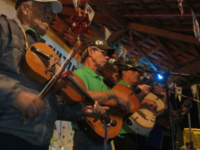
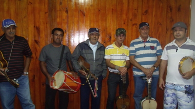
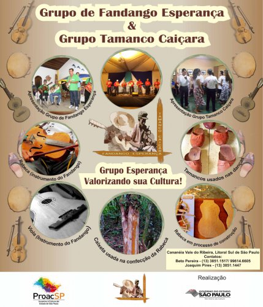

As modas tradicionais do fandango caiçara de Cananéia têm ecoado com mais intensidade em praças e outros espaços da cidade e também nos municípios de Iguape e Ilha Comprida, durante as apresentações culturais que o Grupo de Fandango Esperança de Cananéia vem realizando ao longo dos últimos meses, com o objetivo de preservar e promover o fandango tradicional na região.
A última apresentação do grupo aconteceu na noite de sábado, 18/07, em Cananéia, durante o evento cultural “Arraiá da Tiduca”, quando centenas de pessoas lotaram a Praça Theodolina Gomes (Tiduca) para ouvir e dançar ao som dos instrumentos tradicionais do fandango: viola, rabeca, cavaquinho, pandeiro de meia lua e caixa de folia.

No palco, os mestres tocadores e cantadores Ataliberte Lauro Pereira (Beto Pereira), Joaquim Pires, João Fermino, Hugo de Almeida, Pedro Pires (Doca) e Jorge Luís, conjunto que forma o “Esperança”, grupo criado há 15 anos para resgatar e fortalecer a cultura tradicional caiçara do Vale do Ribeira.
As apresentações fazem parte do Projeto “Registro da Memória do Grupo de Fandango Esperança & Grupo Tamanco Caiçara”, apoiado pelo Programa de Ação Cultural (PROAC SP 27/2014) da Secretaria da Cultura do Estado de São Paulo. Desde fevereiro, o grupo já promoveu 17 apresentações na região, nas quais estudantes, turistas e moradores locais têm a oportunidade de conhecer as “chamarritas” e o “dan-dão” (fandango valsado) e as modas de fandango rufado, criadas para dançar com tamanco. Novos eventos já estão agendados para os meses de agosto, setembro e outubro nas cidades de Cananéia e Ilha Comprida.
"As apresentações culturais de fandango são a forma que o povo tem de voltar no tempo e relembrar a riqueza da cultura tradicional. Esta riqueza, que esteve tão presente nas comunidades tradicionais, agora se mantém viva através das exibições do fandango que ocorrem na cidade de Cananéia e em outros lugares", afirma Beto Pereira, representante do Grupo Esperança.
Tocador de viola e proponente do projeto que está sendo apoiado pelo PROAC SP, Beto Pereira diz que a última apresentação de fandango na Praça da Tiduca, em Cananéia, “teve altíssimo valor”. Em nome do grupo, ele agradeceu ao convite feito pelos organizadores, o Grupo Cultural Tiduca e o Grupo de Capoeira Nosso Senhor do Bonfim de Cananéia, “que ajudam a manter viva a cultura tradicional dentro de uma festa tão bonita como o Arraiá da Tiduca”. A festa cultural na praça combina apresentações de fandango com oficinas, quadrilhas e forró.
A apoiadora do projeto do Grupo de Fandango Esperança, Juliana Greco Yamaoka, lembra que além de viabilizar as apresentações da equipe em Cananéia e municípios do entorno, a iniciativa vem apoiando as exibições de dança do Grupo Tamanco Caiçara, formado em 2008 e que também trabalha pelo resgate e fortalecimento da cultura tradicional caiçara na região.
Outras ações do projeto:
Entre as atividades em execução pelo projeto “Registro da Memória do Grupo de Fandango Esperança & Grupo Tamanco Caiçara” estão a produção de um CD – em fase de gravação e que deve ser lançado a partir do mês de setembro - e a realização de oficinas sobre fandango com estudantes de Cananéia, que têm a intenção de disseminar a cultura entre as novas gerações. O projeto também vem apoiando a melhoria da infraestrutura de trabalho e de caracterização e identidade visual dos grupos, com a aquisição de equipamentos e uniformes e produção de materiais de divulgação.

Agenda:
12 a 15/08: Festa de Nossa Senhora dos Navegantes (Centro - Cananéia/SP)
12/08: Restaurante Sambaqui (Centro - Cananéia/SP)
26/08: Hotel Sol a Sol (Retiro das Caravelas - Cananéia/SP)
24/09: Quiosque do Rudy (Boqueirão Sul - Ilha Comprida/SP)
25/10: Restaurante Porto Camarão (Rocio - Cananéia/SP)
Mais informações:
(13) 3851-1517 e 99614-6605 (Beto Pereira)
(13) 3851-1447 (Joaquim Pires)
— -
Fotos: Rodolfo Monteiro & Foto: Rodolfo Istvanffy



{kind=link}
{kind=link}
{kind=link}
{kind=link}
{kind=link}